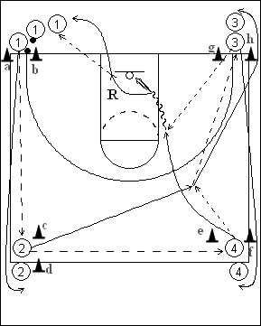

Catégorie : PASSES (Pas-012)
Déroulement
- Quatre files de joueurs aux quatre coins d’un demi-terrain. Les ballons sont dans la file 1.
- Le premier joueur de la file 1 passe au premier joueur de la file 2. Celui-ci passe au premier joueur de la file 4, reçoit le ballon en retour et le passe au premier joueur de la file 3. Après sa passe au premier joueur de la file 2, le premier de la file 4 court derrière lui et reçoit le ballon du premier joueur de la file 3 pour un lay-up.
- Le shooteur réalise son rebond et va dans la file 1. 1 va en 2, 2 et 3 et 3 en 4.
Coaching points
- Bien marquer les quatre emplacements derrière les lignes de cônes.
- Exiger des passes précises et très rapides.
- On peut terminer par un jump shoot au lieu du lay-up.